正君
之教

依据国家《中学德育大纲》《中小学文明礼仪》《中国学生素养2016》和深圳中学德育目标要求，结合8班学生年龄特点和班级定位，制定8班初一阶段德育发展方向，并以此开展和评估班级工作，以期能够增进家校理解与合作，为培养具有现代特质的中学生提供发展性支持。
（一）价值观教育：关于核心价值观的体系构建是一个意义深远的行动，关乎孩子的生命状态和民族的未来。本学期将着重构建的是：“尊重”，主要内容是：尊重自己、尊重他人、尊重责任、尊重优秀。
（二）学习小组： 班级是一个学习团队，由仁义礼智信五个学习小组构成，初一第一阶段要发挥好小组合力，在竞争中共同进步。
（三）学科管理： 把各学科的管理分为四个学段，不同学段进行考核;针对性要强，让每一个学生都在实现个人目标的征途上奔跑。
（四）综合能力 ：在沟通能力、思维能力、审美能力、表达能力、动手能力、协作能力等方面呈现出不一般的素质。
（五）文化生活： 家长群体将发挥主导作用和资源优势，举行与成长有关的互动活动，深化学习的情趣。同时还合力打造亲子文化。
当我们把老师、同学、家长和社会四个主体融合在一起时，我们会发现这是一种十分美好的机缘，我们可以创造更有意思的生存状态。只要我们都充分尊重，十分珍惜，万分努力，就能争得百分的满意。
目标：立德树人，全面发展
★初步培养全球视野、家国情怀、共情意识
★深圳中学学生特质五维度：荣誉、责任、习惯、思维、卓越
●培养尊重自己、尊重他人、尊重责任、尊重优秀之品德
●培养组建团队、制定队规、依规办事、协调关系、解决问题的能力
●尊敬父母师长，遵守公共文明礼仪，关注细节，感受真实情义，学会合理表达
●适应初一过渡阶段心理变化，情绪与行为的自控能力有所发展
模式：学习型团队
口号：奋斗点亮自己 光芒照亮他人
结构：班主任----班委会----学习小组-----家长群
班委会
班长：王艺霖 副班长：谢彤 中队长：严逸冰
学习委员：张扬柯 体育委员：李子豪 宣传委员：高悦然
文娱委员：李沛霖 生活委员：王绚儿 纪律委员：李承辉
电教管理员：刘圳宸
静校管理员：庞子傲
卫生委员：郑一民（总负责）、陈华慈（中午）、李嘉骏（傍晚）
学习小组：仁（曹熙媛）、义（李梓昕）、礼（欧宇杰）、智（吴毓焓）、信（张杨柯）
家委会——
会长：罗女士（扬柯妈妈）
学习部：宇杰妈妈，悦然妈妈，容达妈妈
文体部：瑾禹妈妈，静怡妈妈，毓焓妈妈
宣传部：婧语妈妈，哲宇妈妈
财务部：绚儿妈妈，宝仪妈妈
家长义工组
：
仁（瑾禹妈妈 悦然妈妈）
义（宝仪妈妈 静怡妈妈）礼（绚儿妈妈 宇杰妈妈）智（婧语妈妈 毓焓妈妈）信 （容达妈妈 哲宇妈妈）
奋斗点亮自己，光芒照亮他人
——八班那些人，那些事
品德篇
我们班叫“启航中队”，寓意团结、友爱。在军训、运动会上，同学们也用行动证实了这一点。我们群策群力、齐心协力设计了班服和班旗，一稿又一稿，不断修改、完善。我们获得了“精神文明班级“的荣誉称号。
学习篇
都说“书山有路勤为径，学海无涯苦作舟”。道法课上也说，初中阶段的学习是我们的重要任务。我们持着“只要学不死，就往死里学的态度”，自觉去图书馆和自习室自习，积极完成“放学后占+领图书馆”的任务。
文化篇
不仅如此啊，我们班的文化底蕴也很深厚。这不，前几天，我们班举办了文化节活动，有诗词飞花令、小组辩论赛、你画我猜等项目。尤其是在诗词飞花令中，同学们强大的诗词功底，为我们呈现出一场精彩绝伦的诗词盛宴。
音乐篇
音乐也是咱们班一大强项。在元旦联欢晚会上，人人都有“一技”压身，舞蹈、小品、三重奏、四重奏，接连献出，春节序曲更是由双簧管，古筝，大、小提琴，笛子交织而成……精彩的演出收获了如潮的掌声。徐婧语同学更是成功入围十大歌手，并拿到第6名的好成绩。
劳动篇
劳动当然辛苦，但劳动也最光荣。午休时，地板被值日生扫得干干净净；放学后，凌乱的桌椅被值日生排得整整齐齐；就连D204整洁的桌椅、门窗，都是8班同学的杰作。
结尾篇
我们大家都在一条船上，只有大家团结一致，一起划奖，一齐划桨，才能够“长风破浪会有时，直挂云帆济沧海”。 愿8班在今后的时光“乘风破浪，扬帆起航”。
1月18日晨，学生安全教育+年级“如何看待成绩”
2、期末考试成绩
前十名：曹熙媛、杨元曦、张扬柯、付子裕、徐婧语、王艺霖、丁思云、李嘉骏、林昶荣、陈华慈、江静怡
小组均分：423（仁） 419（义） 416（礼） 401（信） 394（智）
小组头名：曹熙媛（仁）、李嘉骏（义）、林昶荣（礼）、徐婧语（智）、杨元曦（信）
单科情况（前200）：
语文：曹熙媛、付子裕、徐婧语、陈华慈、丁思云、杨元曦、李嘉骏、高悦然、位一欧、王艺霖、毛雨洋、
郑一民、李梓昕、李孟方鑫
数学：张扬柯、林昶荣、欧宇杰、丁思云、李承辉、曹熙媛、付子裕、陈华慈、刘圳宸、杨元曦、王艺霖、
李嘉骏、吴卓桁
英语：王艺霖、曹熙媛、江静怡、李嘉骏、付子裕、杨元曦、丁思云、胡铭灏、林昶荣、郑一民、陈华慈、
徐婧语、刘圳宸、吴毓焓、张扬柯、庞子傲、位一欧
历史：付子裕、王艺霖、刘圳宸、曹熙媛、张扬柯、白石齐、胡彦淳、郑一民、位一欧、陈华慈、徐婧语、
李梓昕、杨哲宇、李承辉、吴毓焓
道法：曹熙媛、张扬柯、王绚儿、陈玥仪、杨哲宇、李承辉、郑一民、王艺霖、徐婧语、丁瑾禹、丁思云、
李嘉骏、毛雨洋、高悦然、付子裕、位一欧、李子豪、刘圳宸、吴毓焓、徐培杰、李沛霖
体育：杨元曦、江静怡、吴卓桁、曹熙媛、林昶荣、谢彤、胡彦淳、丘梓淇、徐婧语、张扬柯、李嘉骏、李子豪、陈玥仪、丁瑾禹、张凯然、王浩权、袁千茹
地理：郑一民、李承辉、王艺霖、付子裕、吴毓焓、杨元曦、郭浩涵、位一欧、杨哲宇、丁思云、陈华慈、
白石齐、曹熙媛、张扬柯、孙彦良、欧宇杰、李嘉骏、张凯然、刘圳宸
生物：曹熙媛、付子裕、陈华慈、张扬柯、丁思云、毛雨洋、刘圳宸、位一欧、徐婧语、王艺霖、杨元曦、
郑一民、李承辉
3、散学典礼与期末表彰
2021年1月22日上午，成美楼先锋剧场，现场直播。
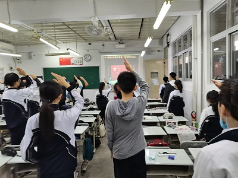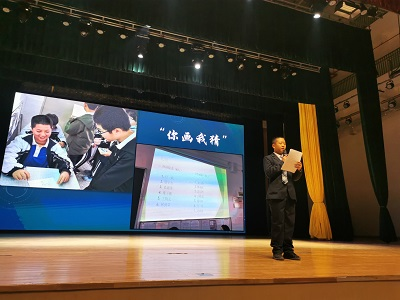
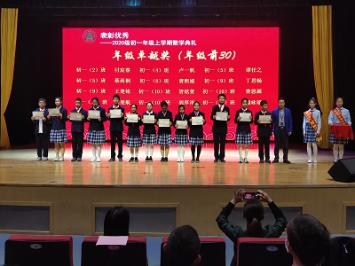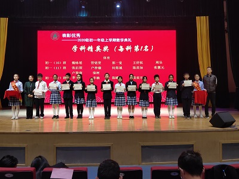
优秀学生干部：
王艺霖、谢彤、高悦然
文明规范生：
陈华慈、丁思云、曹熙媛、陈玥仪、付子裕、
李梓昕、李嘉骏、江静怡、位一欧、刘圳宸、
林昶荣、毛雨洋、王绚儿、徐婧语、李沛霖、
杨元曦、张扬柯、姚彩晴、杨哲宇、张凯然
领奖代表：曹熙媛、张扬柯、李承辉、江静怡
自我超越：李子豪、胡彦淳
班级风采展示：
主讲人：王艺霖、高悦然
学生评委：付子裕、李嘉骏、刘圳宸、谢彤、张凯然
撰稿与制作：王艺霖、高悦然、陈玥仪
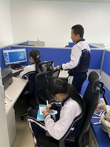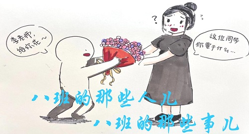
4、布置考场
班干部完成
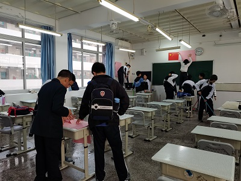
5、感恩英语李老师
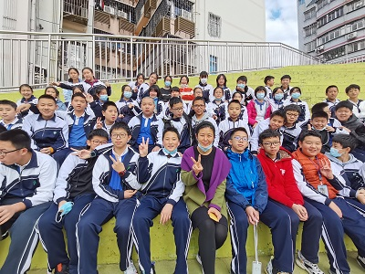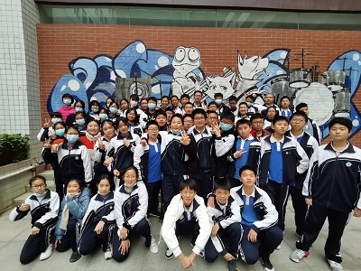
6、寒假防疫情况说明
4人拟外出，已报备
7、家委发布寒假倡议书
1月22日，家委发布寒假倡议书。
1、主题班会
1月11日晨，教学处考前教育
2、考前紧张复习
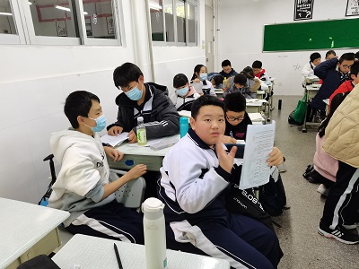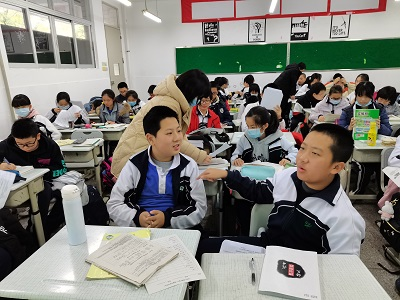
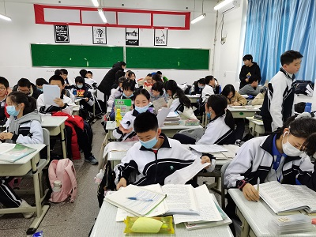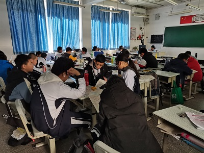
3、期末考试
1月14-15日，期末考试
4、完成义务劳动
近三周，每天中午部分同学在 D204教室义务清洁。
付子裕、曹熙媛获得二等奖
2、图书馆“夕阳练”（复习）
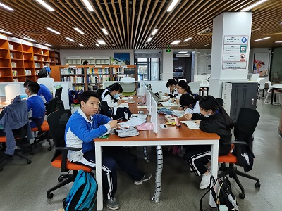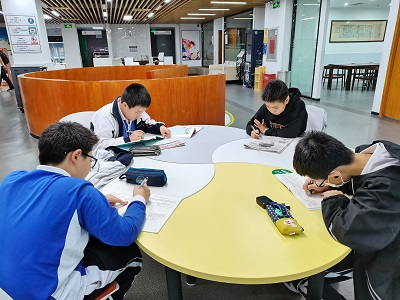
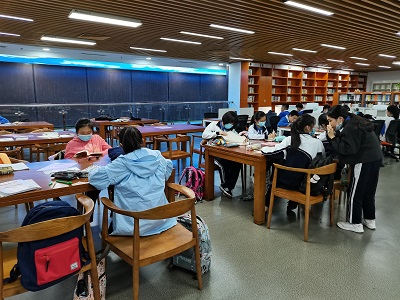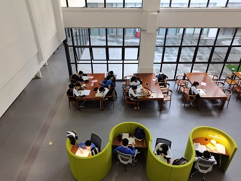
3、仁组内部调整
通过老组长推荐，组员投票，新选曹熙媛担任组长。
4、综合素质评价工作启动
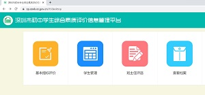
1、主题班会
12月28日，班级主题班会——做一个自省的人。以综合素质评价各观测点为标准，对自己一学期以来德、智、体、美、劳五个方面进行评价。
2、班级系列文化节活动
12月29日上午，义组举行了“画画接龙”活动；
12月30日下午，班级迎新联欢文艺活动在雍睦堂举行；
12月31日上午，信组举行了小组间篮球赛活动；
12月31日下午，仁组举行了“飞花令”活动，智组完成了一小部分的“你画我猜”活动；
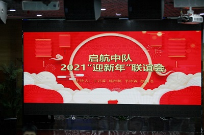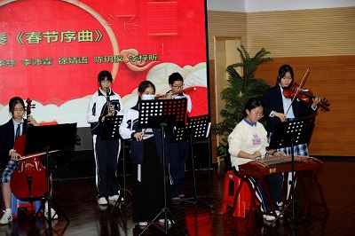
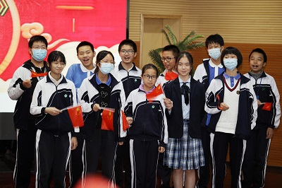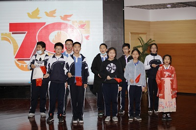
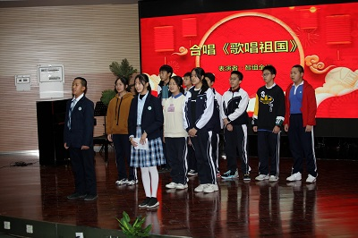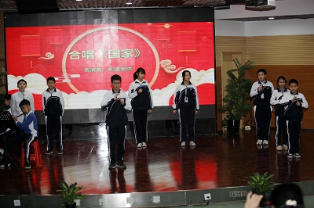
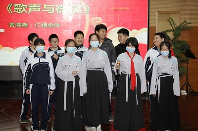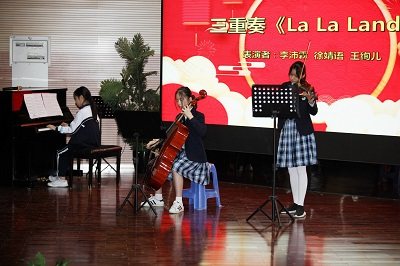
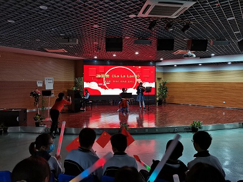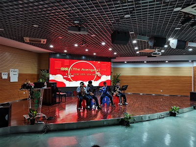
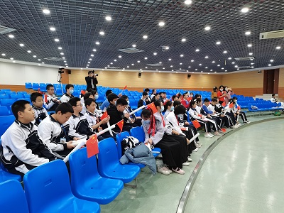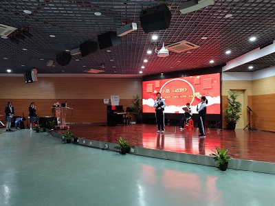
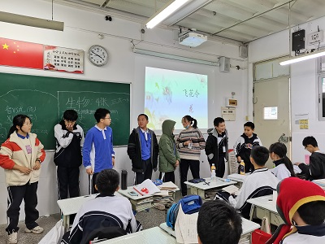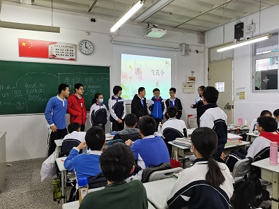
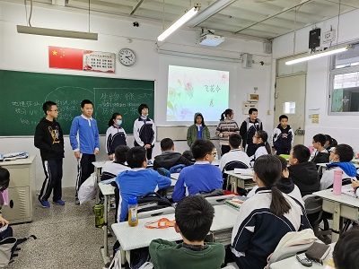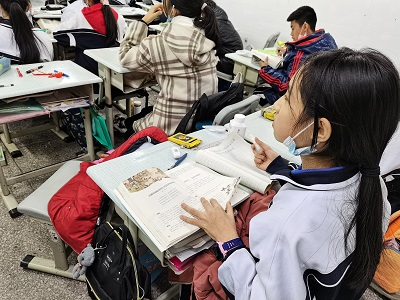
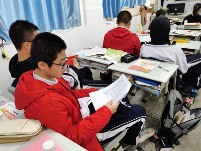
3、徐婧语参加校园十大歌手决赛
12月31日下午放学后，校园十大歌手决赛在先锋剧场通过网络的方式直播，婧语同学最终获得第六名的好成绩。粉丝们在教室里观看比赛。
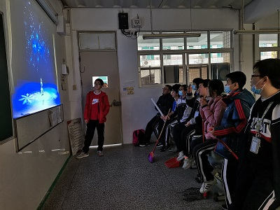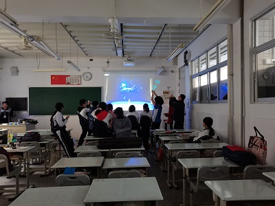
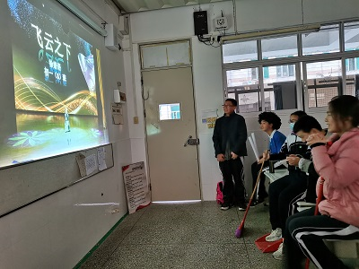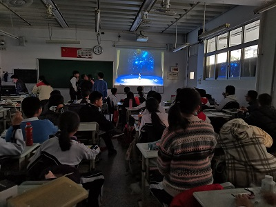
4、义工活动继续进行
5、启动考前管理
每天下午放学，图书馆自习
6、各小组调整座位
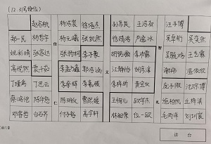
1、主题班会
12月21日晨，主题班会——学科学用科学，观看“无人机挑战赛”视频。
3、凤凰木杯
12月22-24日下午放学后分别举行了杯赛英语数的测试。我班15人报名参加。
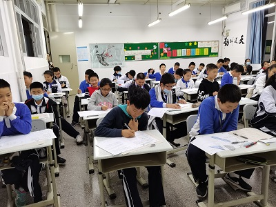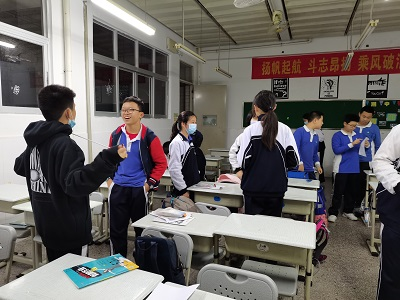
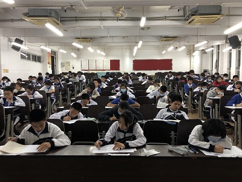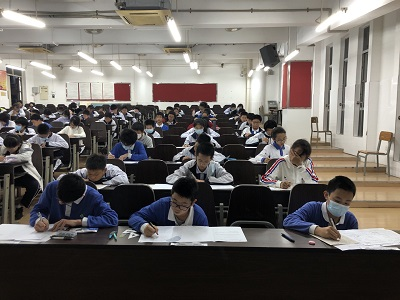
4、义工活动
班级向学校申请每天义务清洁D204教室，中午11点50-12点40.
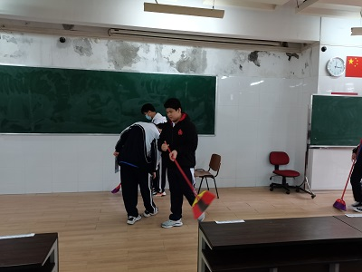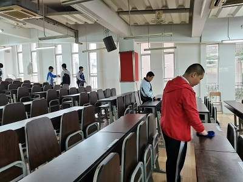
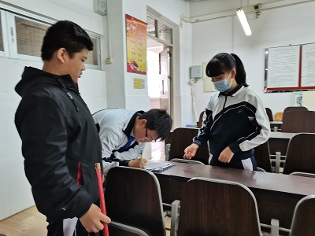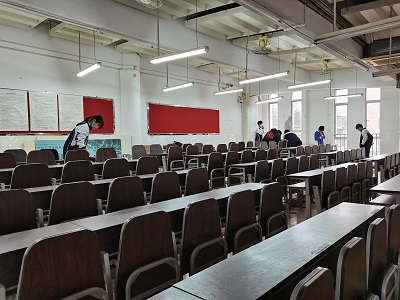
5、班级文化节系列活动——辩论会
12月25日下午第一节课，由礼组承担的辩论会在D204举行，通过抽签，仁组与智组，信组与义组进行比赛，辩题分别是：理想人才以仁/智为主、挫折不/适合成长。家委安排义工家长来校观摩拍摄。
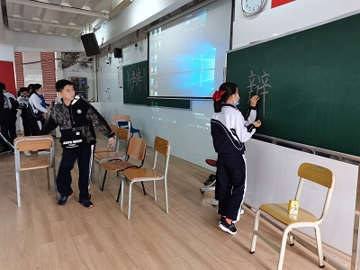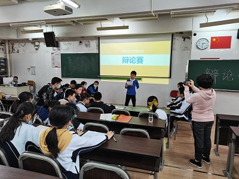
6、校园十大歌手
徐婧语同学进决赛
7、整顿学风
交作业问题
1、主题班会
12月14日晨，主题班会——安全教育
2、消防演习
12月18日下午3点50分，全校消防演习。
3、道法学科法治专题讲座
12月16日下午第三节课时间，成美楼先锋剧场。
4、班级文化周筹备会议
12月18日下午2点，图书馆教育研究室，家委代表、班委代表和项目负责人一起召开了关于班级文化周的筹备会议。
5、涂鸦活动
12月17日美术课上，小组的涂鸦——
6、 十大歌手复赛
徐婧语参加
7、各小组调整座位
1、全校大会
12月7日，力行楼。运动会表彰。
我班获得精神文明奖、方队最佳队列奖，最佳才艺奖。团体总分103分.
最佳运动员：张扬柯、胡彦淳、徐婧语、林昶荣、吴卓桁、谢彤
最佳服务奖：高悦然、王浩权、郑一民、杨哲宇、吴弈然、胡铭灏
2、英语听说期末考试
12月10日上午第5节课，英语听说期末考。
3、四点半课程——围棋与田径
4、部分同学接种流感疫苗
5、布置考场
6、十大歌手海选
徐婧语进复赛
7、家委公众号第二期：陪伴是一种修行
周一早上，年级统一主题班会，主题是《最初的梦想》
2、家长会
12月4日晚7点-9点40分，本学期线下家长会在D207教室举行。流程有年级心理讲座、综评简介、学法指导、家委会章程、班主任总结。
3、食堂做义工
4、改选班委
班长：王艺霖 副班长：谢彤 中队长：严逸冰
学习委员：张扬柯 体育委员：李子豪 宣传委员：高悦然
文娱委员：李沛霖 生活委员：王绚儿 纪律委员：李承辉
电教管理员：刘圳宸 静校管理员：庞子傲
卫生委员：郑一民（总负责）、陈华慈（中午）、李嘉骏（傍晚）
5、准备接种流感疫苗
6、体质测试
7、周五组内调整座位
11月21日，成美楼。升旗仪式，期中表彰。
2.运动会方队训练
3、拔河比赛
4、班旗
起航图案
5、运动会
11月26、27日两天，运动场。见第一期班级公众号
6、各小组调整座位

7、静校新政
4人被暂停
11月14日晨，成美楼，宣讲综合评价。老师和家长网上填表。
2、期中成绩
前十名：王艺霖、曹熙媛、张扬柯、陈华慈、付子裕、丁思云、吴毓焓、徐婧语、江静怡、杨元曦
小组均分：388.15（仁） 376.18（礼） 370.5（义） 366.98（信） 349.5（智）
小组头名：曹熙媛（仁）、江静怡（义）、欧宇杰（礼）、王艺霖（智）、张扬柯（信）
单科情况（前30%）：
语文（前30%）：曹熙媛、付子裕、陈华慈、丁思云、高悦然、江静怡、吴毓焓、张扬柯、徐婧语、王艺霖、毛雨洋、李嘉骏、李孟方鑫、位一欧
数学（前30%）：欧宇杰、吴毓焓、陈华慈、张扬柯、王艺霖、林昶荣、丁思云、李承辉、付子裕、李梓昕、高宇轩
英语（前30%）：曹熙媛、高悦然、徐婧语、丁思云、李嘉骏、江静怡、王艺霖、位一欧、林昶荣、陈玥仪、胡铭灏、杨元曦、吴毓焓、陈华慈、张扬柯、刘圳宸、付子裕、邓睿哲
历史（前30%）：付子裕、江静怡、王艺霖、李梓昕、杨哲宇、曹熙媛、徐婧语、陈华慈、毛雨洋、张扬柯、李承辉、白石齐、李嘉骏、杨元曦、刘圳宸、李孟方鑫、郑一民
道法（前30%）：曹熙媛、高悦然、吴毓焓、丁思云、张扬柯、郑一民、徐婧语、付子裕、王艺霖、陈玥仪、李嘉骏、欧宇杰、杨元曦、杨哲宇、江静怡、毛雨洋、林昶荣、陈华慈、位一欧、赵启航、庞子傲、李沛霖、张容达、袁千茹、丘梓淇、李孟方鑫、高宇轩、吴卓桁
地理（前30%）：丁思云、付子裕、王艺霖、吴毓焓、杨元曦、李承辉、李梓昕、张扬柯、欧宇杰、吴卓桁、杨浩宸、曹熙媛、徐婧语、陈华慈、刘圳宸、郑一民、杨哲宇、林昶荣、张容达、李孟方鑫
生物（前30%）：王艺霖、曹熙媛、付子裕、丁思云、杨元曦、陈华慈、刘圳宸、位一欧、张扬柯、江静怡、徐婧语、毛雨洋、王绚儿
3.成立家委会
会长：罗女士（扬柯妈妈）
学习部：宇杰妈妈，悦然妈妈，容达妈妈
文体部：瑾禹妈妈，静怡妈妈，毓焓妈妈
宣传部：婧语妈妈，哲宇妈妈
财务部：绚儿妈妈，宝仪妈妈
家长义工组
：
仁（瑾禹妈妈 悦然妈妈）
义（宝仪妈妈 静怡妈妈）礼（绚儿妈妈 宇杰妈妈）智（婧语妈妈 毓焓妈妈）信 （容达妈妈 哲宇妈妈）
4、生物公开课
11月15日，生物公开课。
5、班服设计
三个方案供选，投票表决。
6、宣委等制作期中板报
7、静校实行新政
2人被暂停
1、班会
考前教育
2.期中考试
11月12-13日，期中考试。
3.运动会报名
谢彤、李子豪同学在组织运动会各项比赛项目的报名
4.整理教室
陈华慈、林昶荣等初二物理考完后，打扫教室。
5、班服设计
严逸冰、高悦然、李沛霖、江静仪等同学设计运动会班服
团委书记讲话，社团代表讲话。英语听说考试说明。
2、英语听说考试
3.卫生值日管理
班长协助管理，两天达标
4、各组更换座位
5、图书馆自习照常进行
6、班主任外出

1、年级升旗仪式
10月26日晨，成美楼，初一年级举行升旗仪式，并作军训总结。
2、班级启动考前管理周
周二至周五下午放学，倡导全班到图书馆自习。
3、交友之道
10月30日上午8点45分，谢彤、张容达、汪子博、杨浩宸、王浩权、郑一民、赵启航。见证一场心动的握手。
4、安排陈华慈协助保洁管理
2020年10月21-23日，银瓶山东方阳光拓展基地。
优秀学员：谢彤，位一欧，温依欣，李沛霖，严逸冰，邓睿哲，沈琮博，蔡鸿铠，姚彩晴，吴卓桁，吴毓焓，郑一民，李孟方鑫，李承辉，杨哲宇

10月14-19日，林昶荣同学作为深圳市羽毛球队的一员，参加了广东省青少年锦标赛。
2、主题班会
周一早上班会课，主题是“做安静的学习模范”。重点学习了图书馆的规则。
3、自主调配座位
应部分同学的要求，将各小组的座位调配权下放，在组长们的协调下，顺利地完成了这项工作。
4、更换板报
在宣传委员高悦然同学的组织下，制作了新一期的“我爱你中国”主题板报
5、社团活动
（1）赵启航同学当选辩论社的副社长
（2）陈华慈同学担任学生会执委
（3）推荐严逸冰同学竞选大队委文体委员
6、注意运动安全
1、全校升旗
周一全校升旗，班上直播。

2、小组学唱红色经典歌曲
3、窗台布置小盆栽（仿真）
4、国庆放假
周三下午，进行了国庆安全教育
5、强调图书馆自习纪律
1、升旗仪式
年级组织集会，学生处贺主任发表重要讲话。
2、历奇活动
年级组织团建为主题的拓展活动
3、义工活动
部分义工成员在图书馆整理书架
4、阳光体育
周二、三下午放学阳光体育时间，目前以慢跑为主。
5、工具书
6、成立家长义工小组
仁（瑾禹妈妈 悦然妈妈）
义（宝仪妈妈 静怡妈妈）
礼（绚儿妈妈 宇杰妈妈）
智（婧语妈妈 毓焓妈妈）
信 （容达妈妈 哲宇妈妈）
1.安全教育主题班会
周一早上，按学生处统一要求，组织安全教育。
各小组组长点评本组
2.完成第一期板报
宣传委员高悦然与部分同学一起完成“感恩母校，立志深中”主题板报
3、中午静校
D204自习室
4、图书馆自习
5、午餐情况
6、存在问题
（1）静校
（2）作业
1、班会课——感恩母校，立志深中
9月7日早上班会课，组织观看教师节视频节目。
2、早读
早上7点20至7点30，科代表带早读

3、教师节
向各科任老师送上节日祝福，部分同学放学后回母校看望老师。
4、班干部一周总结
5、量身高（调桌椅）
6、小测
9月9日，组织了一天的学科测试
7、其他
（1）第二次换座位
（2）静校分流，汪子博同学请缨担任管理员
（3）收集学生QQ号（谢彤）
（4）准备新学期板报（高悦然）
（5）第一次大扫除（郑一民）
（6）个别社团招新
1、开学典礼
9月1日，初中部开学典礼在成美楼举行，朱校长讲话。
2、正式上课
在老师的引领下，本周课堂秩序良好，师生表现都不错。
3、午餐
圈存、排队、吃饭
4、静校
收取静校申请，分流静校人员，管理班级静校。
5、其他
处理学生专用柜箱
收取办卡费、疾病信息调查表、预防接种证明（生活委员）
处理个别学生不适或违纪行为
指导班干部工作
建立小组家长微信群
1、入学礼
8月30日下午2点30分在成美楼先锋剧场，年级组织了入学礼。
2、分组（根据音序和性别组合）
仁（11人）：白石齐、蔡鸿铠、陈华慈、邓睿哲、付子裕、高宇轩；曹熙媛、陈玥仪、丁瑾禹、丁思云、高悦然。
义（11人）：郭浩涵、李承辉、李嘉骏、胡铭灏、李孟方鑫、李子豪；胡彦淳、黄宝仪、李梓昕、江静怡、李沛霖。
礼（10人）：林昶荣、刘圳宸、欧宇杰、庞子傲、沈琮博、施柏帆；毛雨洋、丘梓淇、王绚儿、位一欧。
智（11人）：孙彦良、汪子博、王艺霖、王浩权、吴弈然、吴毓焓、吴卓桁；温依欣、谢彤、徐婧语、严逸冰。
信（11人）：郑一民、张扬柯、张凯然、杨哲宇、杨浩宸、徐培杰、赵启航；姚彩晴、杨元曦、袁千茹、张容达。
3、安排座位
4、初选临时班委
班委会——班长-谢彤 副班长-李子豪 中队长-杨元曦 学习委员-张扬柯 卫生委员-郑一民 宣传委员-高悦然 纪律委员-李承辉
体育委员-李子豪 文娱委员-李沛霖 生活委员-王绚儿 电教管理员-刘圳宸 静校管理员-
学习小组：仁（丁瑾禹）、义（李梓昕）、礼（欧宇杰）、智（王艺霖）、信（张容达）
5、领书
6、放学
7、教室
8、建立家长QQ群
初一：自在打开 且乐且长
czjszsz@qq.com